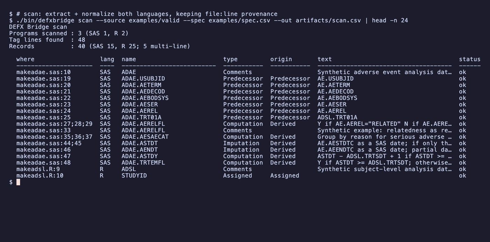
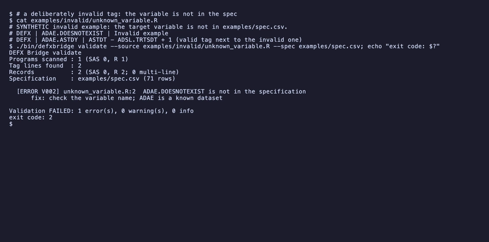
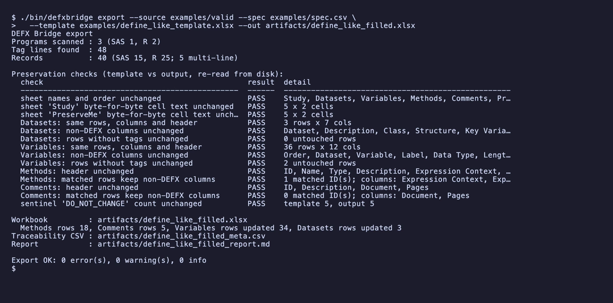
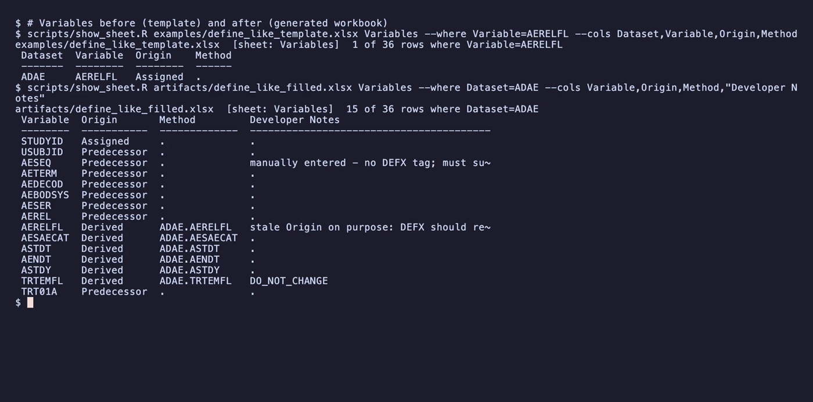

DEFX Bridge
Cross-language metadata extraction and validation for SAS and R statistical programs
DEFX Bridge reads structured DEFX documentation comments from SAS and R programs. It normalizes them into one table that keeps the file and line of every tag line, validates them against an explicit specification, and fills a copy of a synthetic, define-like Excel workbook.
An independent research prototype inspired by Brendan Bartley & Megan Hinger, Do One Task, Get Another Done for Free: Use DEFX Tags in Comments to Fill Out Your define.xml (PharmaSUG 2026, AP-220). It is not affiliated with or endorsed by CBAR or PharmaSUG, it contains no code from the paper, and it is not a validated or regulatory tool. All data is synthetic.
The video (captioned, no voice track) is a real recording: every terminal scene is a recorded shell session with real commands, real output, and nothing sped up (how it was made). The images below are frames from that video.
The problem
Statistical programs contain both the derivation logic and the explanation that reviewers and the define.xml need. Keeping that explanation in a separate document means extra work at the end of a study, and the two can drift apart. The published DEFX approach puts the documentation in structured comments next to the code. DEFX Bridge explores the same convention for R as well as SAS, so a study can move programs to R gradually and keep one metadata workflow.
/* DEFX | ADAE.AERELFL | Y if AE.AEREL="RELATED" */ makeadae.sas /* DEFX | ADAE.AERELFL | N if AE.AEREL="NOT RELATED" */ # DEFX | ADSL.AGE | Predecessor | DM.AGE makeadsl.R
Architecture
SAS lexer · R tokenizer, no code run→ DEFX parser→ Metadata normalization
multi-line consolidation→ Specification validation
V001–V014→ Excel export + validation report
Provenance runs through every stage: file, line, column and the raw comment text are kept for every tag line.
Screenshots

scan: 48 tag lines become 40 records (SAS 15, R 25), each with its file:line provenance.

export writes a copy of the template, reads it back, and keeps it only because all 14 preservation checks pass.
Features
- Supported tags: Computation, Imputation, Predecessor and Assigned; variable and dataset Comments; variable-only tags; and parameter-level AVAL/PARAMCD methods. They work identically in SAS and R.
- Multi-line descriptions consolidate in source order and are never reported as duplicates. A real cross-program conflict reports both locations.
- DEFX-like text inside string literals is ignored.
- Export never overwrites the template. If validation fails, no workbook is written.
- CLI:
scan | validate | export | compare, with exit codes 0 / 2 / 1. - 52 tests and 236 expectations pass locally and in CI, and
R CMD checkreports Status OK.
Limitations
- SAS parsing is partial and lexical.
- There is no Pinnacle 21 compatibility guarantee, and no CDISC certification.
- It has not been tested against CBAR production code or compared with the original DEFX macro.
- It does not validate whether clinical calculations are correct.